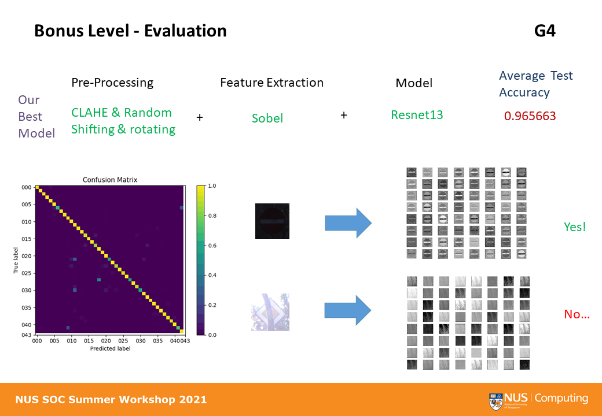
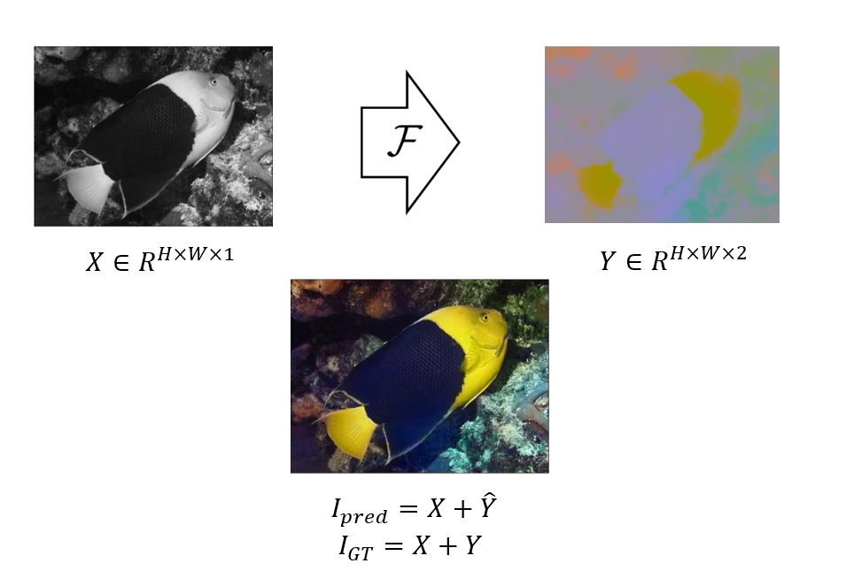

Haipeng Zhou (周海鹏)B.E.
Pengkang Building, Smiles Lab,
|
|

Biography
I'm a senior student from Xi'an JiaonTong University, school of Computer Science and technology, supervised by prof. Yao Xue, in the Smiles Lab. I was also an exchanged junior student at PolyU, where I was a RA collaborated with prof. Li Ping. Now, I start my internship with prof. Zhou Yuyin and focus on Domain Adaption.
Now, I received my offer becoming a Phd Candidate, supervised by prof. Zhu Lei
My research areas focus on computer vision and deep learning, including domain adaption, detection and segmentation, image restoration.
Education
|
|
Xi'an JiaonTong University (XJTU) B.E., Computer Science and Technology Period: Aug, 2019 - Jul, 2023 (expected) Supervisor: Yao Xue |
|
|
The Hong Kong Polytechnic University (PolyU) B.S., Computing (Exchange Programme) Period: Aug, 2021 - Dec, 2021 Advisor: Li Ping |
Publications

|
ESORDA: Enhance Small Object
Representation and Domain Adaption for Mitosis
Detection Haipeng Zhou, Yonghui Li, Xue Yao. State: In submission. Here is a pre-demo. |
Projects
|  |
Traffic Sign Recognition |
|  |
Bright the Grey Image to be colorful! |
{kind=link}
Honors & Awards
Last updated: Oct, 2022